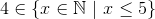
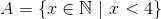
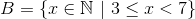

Mulțimi - exerciții rezolvate
Acestea sunt câteva exerciții cu mulțimi rezolvate complet de către profesorii noștri specializați de matematică.
Exercițiul 1:
Să se scrie mulţimea literelor din care este format cuvântul “biblioteca”.
Rezolvare:
.
Exercițiul 2:
Scrieţi mulţimea numerelor naturale mai mici sau egale cu .
Rezolvare:
.
Exercițiul 3:
Fie mulţimile şi . Să se stabilească valoarea de adevăr a propoziţiilor:
- ;
- ;
- ;
- ;
- ;
- ;
- sau ;
- şi .
Rezolvare:
- Elementul nu se află în mulţimea .
- Elementul
 nu se află în mulţimea
nu se află în mulţimea  .
. - Elementul se află în mulţimea .
- Elementul se află în mulţimea .
- Elementul se află în mulţimea .
- Elementul se află în mulţimea .
- Elementul se află în mulţimea , dar şi în .
- Elementul se află în mulţimea şi elementul se află în mulţimea .
Exercițiul 4:
Să se scrie următoarele mulţimi cu ajutorul unei proprietăţi caracteristice:
și .
Rezolvare:
Mulţimea este formată din numere naturale mai mici sau egale cu , adică
.
Mulţimea este formată din cifrele pare, adică
.
Exercițiul 5:
Să se precizeze valoarea de adevăr a propoziţiilor:
- ;
- ;
- ;
- .
Rezolvare:
- Mulţimea dată este .
.
Exercițiul 6:
Să se scrie următoarele mulţimi enumerând elementele acestora:

.
Rezolvare:
Mulţimea este formată din numerele naturale mai mici decât , deci .
Mulţimea este formată din numerele naturale mai mari sau egale decât şi mai mici decât , deci .
Exercițiul 7:
Să se afle cardinalul mulţimilor:
.
Rezolvare:
Mulţimea este formată din numerele naturale mai mici decât , deci .
Mulţimea este alcătuită din numere, deci .
Mulţimea este formată din numerele naturale nenule (diferite de zero) mai mici sau egale cu 1957, deci .
Mulţimea este alcătuită din 1957 numere, deci .
Mulţimea  este formată din numerele naturale mai mari sau egale cu şi mai mici sau egale cu , deci .
este formată din numerele naturale mai mari sau egale cu şi mai mici sau egale cu , deci .
Mulţimea este alcătuită din numere, deci .
Exercițiul 8:
Să se scrie toate submulţimile mulţimilor:
- ;
- ;
- .
Rezolvare:
- ;
- ;
 .
.
Exercițiul 9:
Să se stabilească care dintre mulţimile de mai jos sunt egale:
.
Rezolvare:
Mulţimea este formată din numerele naturale cuprinse între şi , deci .
Mulţimea este formată din numerele naturale mai mari sau egale cu şi mai mici sau egale cu , deci .
Mulţimea  este formată din numerele naturale pare mai mici decât , deci .
este formată din numerele naturale pare mai mici decât , deci .
Rezultă că mulţimile , şi au aceleaşi elemente.
Deci .
Exercițiul 10:
Să se stabilească valoarea de adevăr a următoarelor propoziţii:
- ;
- ;
 ;
;- .
Rezolvare:
- Mulţimea este o submulţime a mulţimii , deci este inclusă în aceasta.
- Mulţimea nu este o submulţime a mulţimii , deci nu este inclusă în aceasta.
- Mulţimea formată din elementul , adică este o submulţime a mulţimii , deci este inclusă în aceasta.
- Mulţimea este o submulţime a mulţimii , deci este inclusă în aceasta.